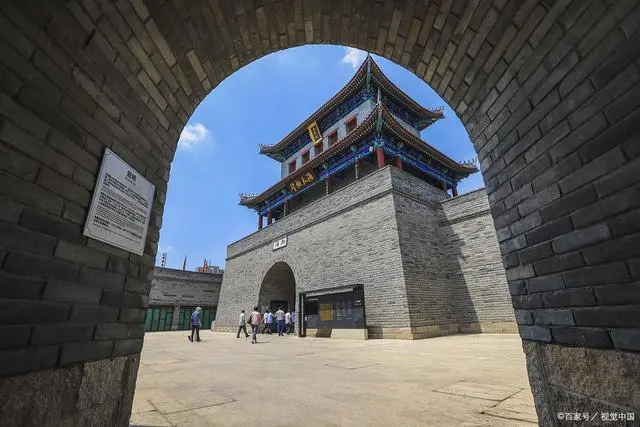
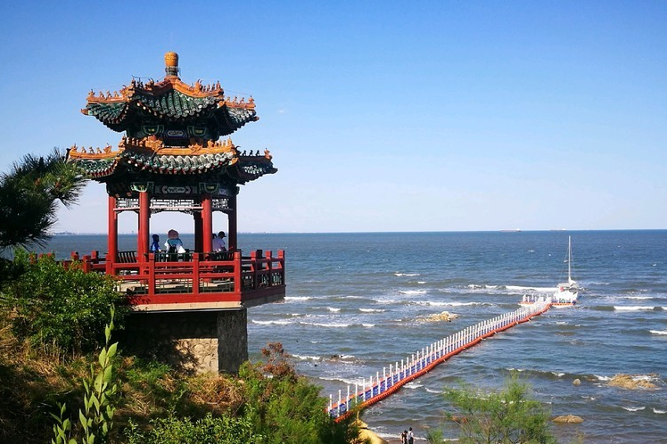
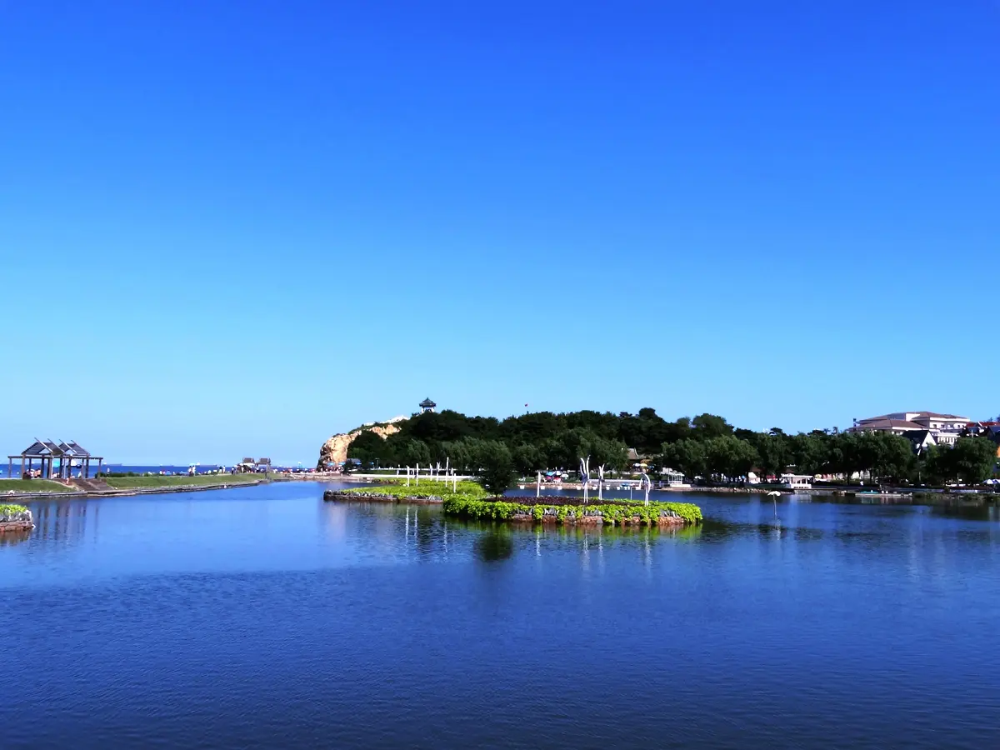
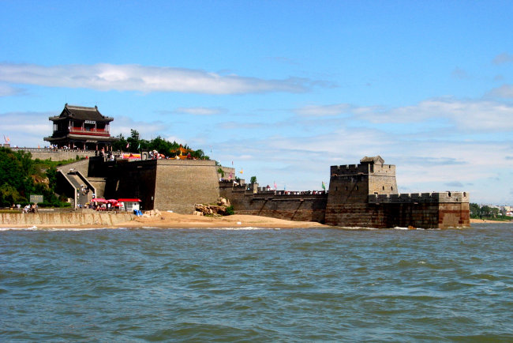
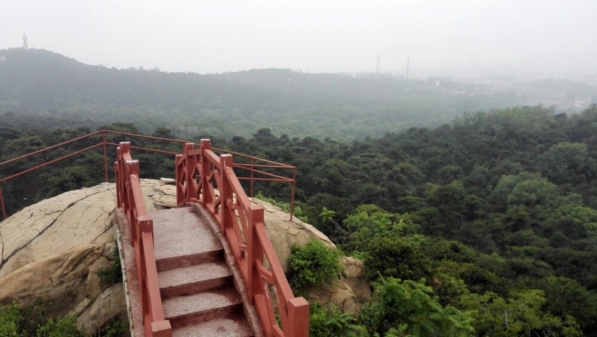
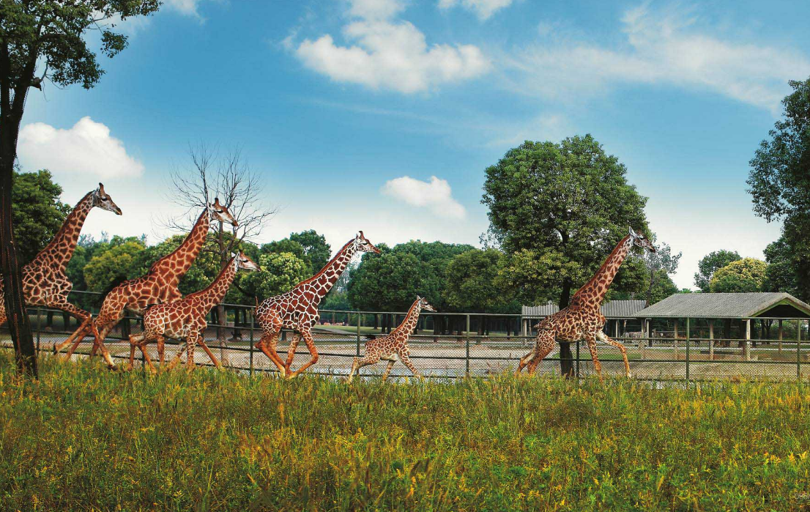
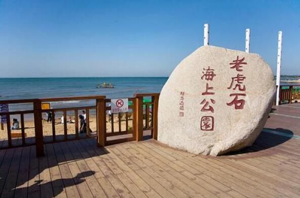
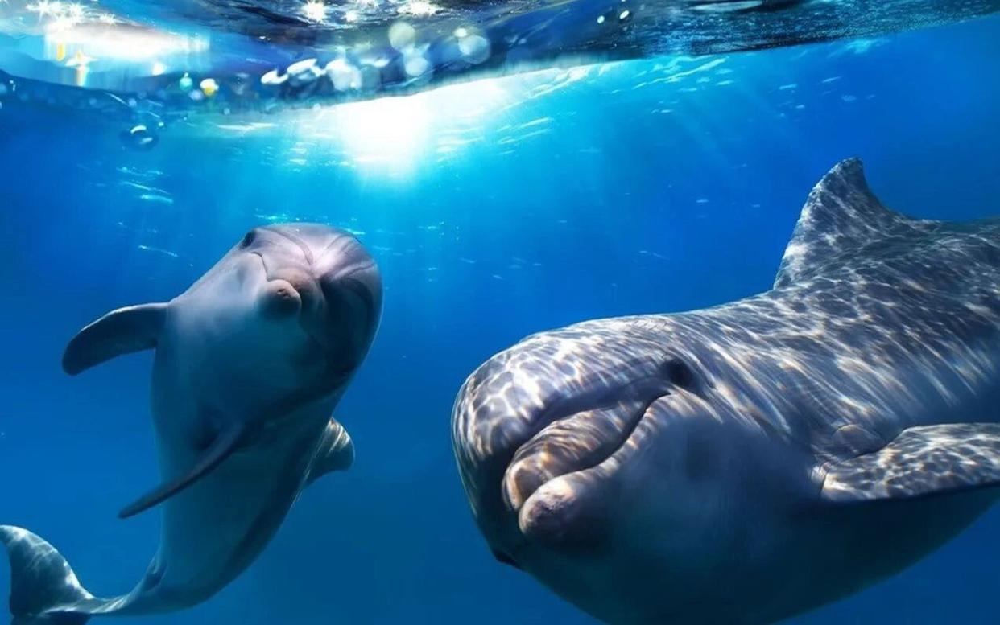

创作者 : 和鸡博客 2024-2-12
以下是为您精心策划的秦皇岛必去十大景点及旅行攻略:
一、十大景点
1. 山海关：作为明万里长城东部起点的第一座关隘，山海关在长城发展史上占有重要地位，被誉为“天下第一关”。
2. 鸽子窝公园：位于北戴河海滨东北角，公园内有形态各异的鸽子洞，堪称大自然的神来之笔。
3. 北戴河：位于秦皇岛北戴河区东部沿海，拥有多个海水浴场，是避暑度假的理想胜地。
4. 老龙头：老龙头景区自身形成半岛伸入渤海之中，是长城入海处，也是长城的尾点。
5. 祖山风景区：位于秦皇岛市青龙满族自治县东南境内，山清水秀、石奇林密，素有“京东胜地”、塞北黄山”的美誉。
6. 联峰山：矗于渤海北岸，峰峦秀美，山石嶙峋，山势连缀，故称联峰；又因松林如海，山势远眺似莲蓬，而别称莲蓬山。
7. 秦皇岛野生动物园：位于避暑胜地北戴河的海滨国家森林公园内，占地面积 5000 多亩，是目前国内城市中占地面积较大，森林覆盖率较高，自然环境优美的野生动物园。
8. 老虎石海上公园：位于北戴河风景区中心，占地面积 3.3 万平方米，巨石延伸入海，形如群虎盘踞。
9. 乐岛海洋王国：位于夏都秦皇岛，为国家 AAAA 级旅游景区”、中国休闲主题公园”。
10. 新澳海底世界：国家首批命名的 4A 级景区，中国旅游知名品牌。